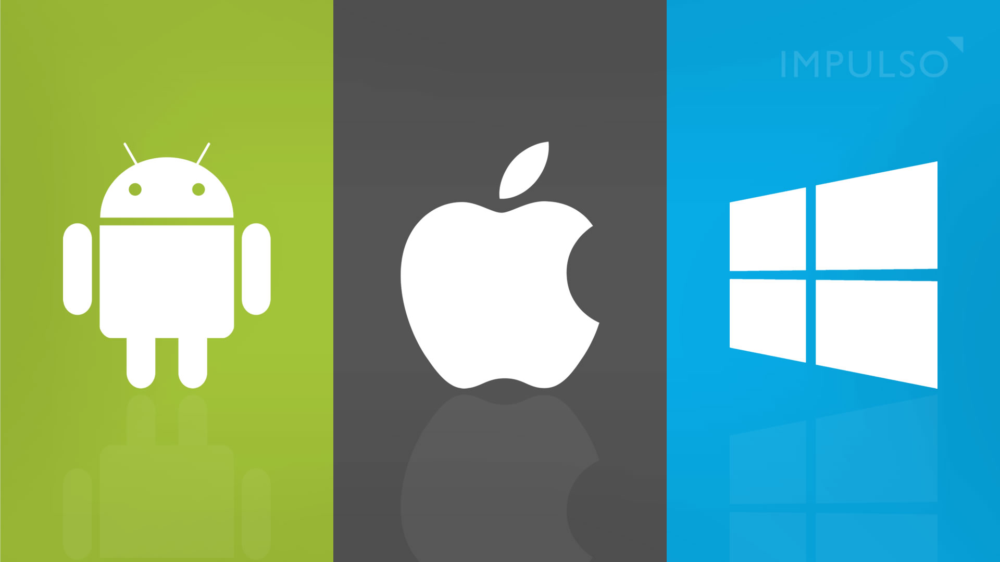

Programacion de Sistemas Operativos
El desarrollo de sistemas operativos implica diseñar y mantener el software esencial
que gestiona los recursos de hardware de una computadora. Este software, conocido como
kernel, se encarga de funciones clave como la gestión de memoria, la planificación de
procesos y la administración de dispositivos. El objetivo es proporcionar una interfaz
eficiente entre el usuario y el hardware, asegurando la ejecución suave de aplicaciones y
la integridad del sistema.
Lenguajes y Tecnologías.
C++ : Utilizado ampliamente en el
desarrollo de sistemas operativos debido a su eficiencia y capacidad de acceso
a bajo nivel.
Assembly : Aunque no es un lenguaje de programación de alto nivel, es esencial en el
desarrollo de sistemas operativos debido a su proximidad al lenguaje de máquina.
Python : Puede ser utilizado en diversos aspectos
del desarrollo de sistemas operativos, como herramientas de automatización, scripts
y pruebas.
Rust : Se está volviendo cada vez más popular para el
desarrollo de sistemas operativos, ya que combina la eficiencia de C++ con la
seguridad de lenguajes más modernos.
Conceptos fundamentales.
Gestión de Memoria: Controlar y organizar el acceso a la memoria del sistema para
garantizar la eficiencia y evitar conflictos.
Gestión de Procesos: Coordinar y controlar la ejecución de procesos y aplicaciones
en el sistema.
Sistema de Archivos: Organizar y gestionar la información almacenada en dispositivos
de almacenamiento, como discos duros.
Programación Concurrente: Permitir que múltiples tareas se ejecuten simultáneamente
para mejorar el rendimiento y la capacidad de respuesta del sistema.
Interfaz de Usuario: Proporcionar un medio para que los usuarios interactúen con el
sistema operativo a través de interfaces gráficas o de línea de comandos.
Áreas especializadas.
Kernel Development (Desarrollo del Núcleo): Enfocado en la implementación y
optimización del núcleo del sistema operativo.
Sistemas de Archivos: Desarrollo y optimización de sistemas de archivos para el
almacenamiento y recuperación eficientes de datos.
Seguridad del Sistema Operativo: Implementación de medidas de seguridad para
proteger el sistema contra amenazas y ataques.
Redes y Comunicaciones: Desarrollo de protocolos y servicios de red para facilitar
la comunicación entre sistemas y dispositivos.
`
Virtualización: Creación de entornos virtuales para ejecutar múltiples sistemas
operativos en un solo hardware, mejorando la eficiencia y la flexibilidad.
